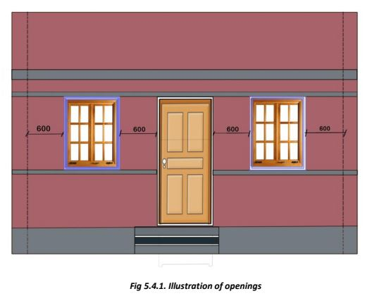

What are ideal sizes and locations of openings for doors and windows in a house?
The opening should be provided at least 600mm away from the internal surface of a wall, and the distance between the openings should also be a minimum of 600mm.
The preferable width of the window for resistance against seismic activity is 600mm. However, at lower elevations, it may be taken to be 900mm.
The door and window openings should be positioned at least 450mm away from wall corners or junctions. NBC 2016 recommends the following normal sizes: